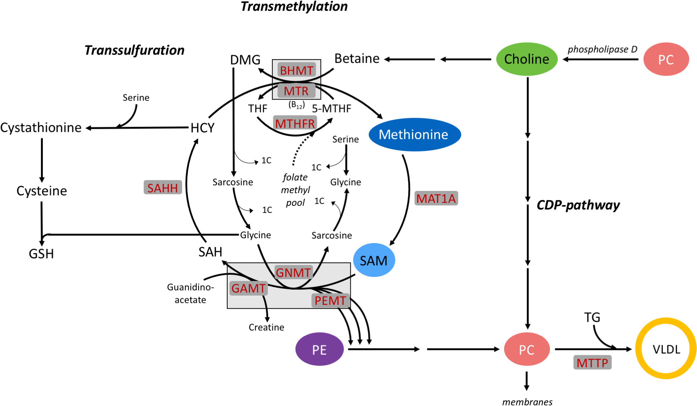
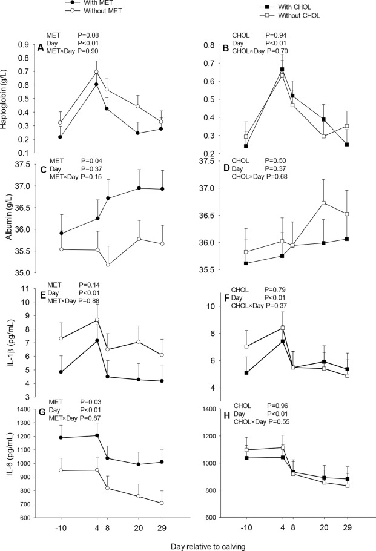
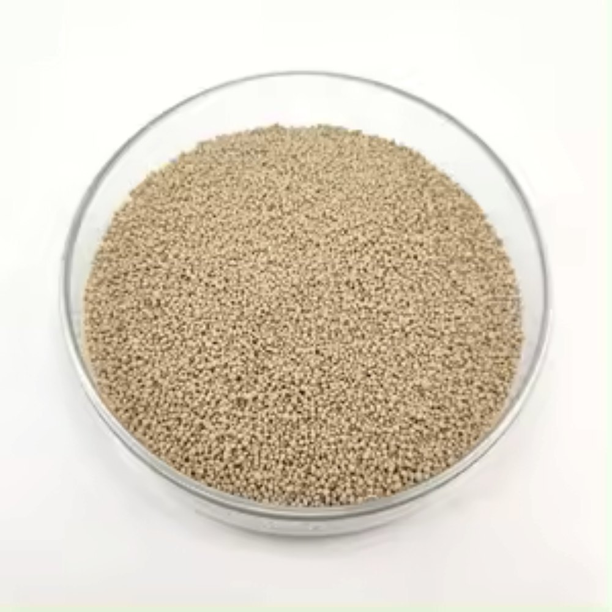
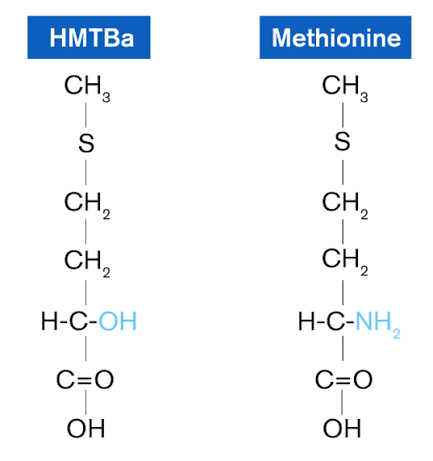
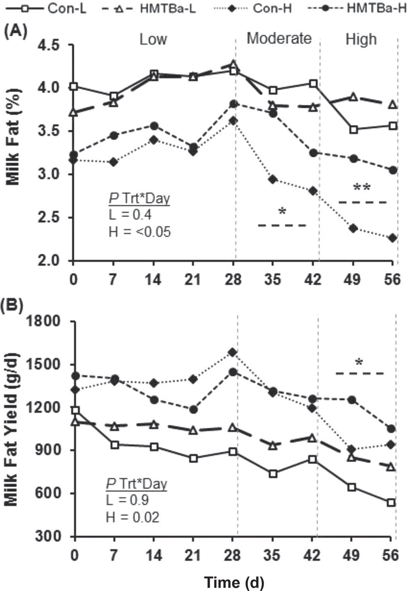

Studiereis Dairyconsult Italië 2026
Methionine, van https://nl.wikipedia.org/wiki/Methionine
Eiwitvoorziening. 2,5% melkeiwit bestaat uit methionine
Allerlei metabole functies, zoals afweer, leverwerking:


Invloed van methionine op weerstand in transitie, uit Zhou et al. (2016)



Invloed van HMTBa op melkvetgehalte, uit Baldin et al. (2018).